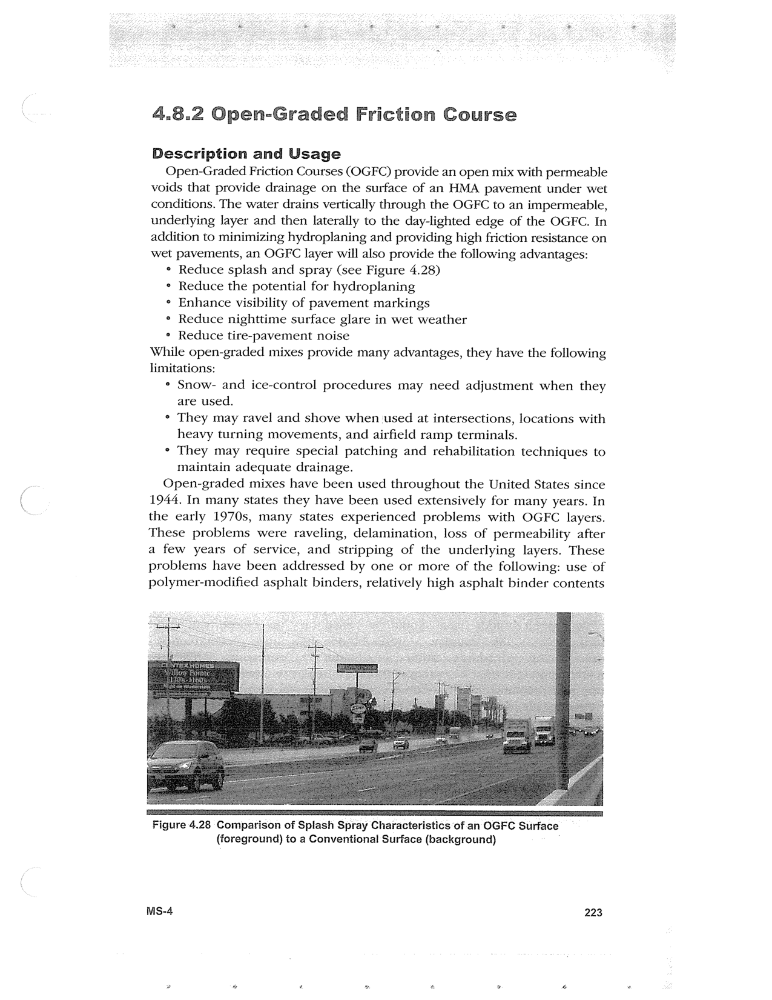

PDF page 257 · book page sequence 223


Searchable transcription
Unproofread OCR · 256 detected words; mean OCR confidence 94.02. Check technical values, symbols and table columns against the scan.
4.8.2 Open-Graded Friction Course
Description and Usage
Open-Graded Friction Courses (OGFC) provide an open mix with permeable voids that provide drainage on the surface of an HMA pavement under wet conditions. The water drains vertically through the OGFC to an impermeable, underlying layer and then laterally to the day-lighted edge of the OGFC. In addition to minimizing hydroplaning and providing high friction resistance on wet pavements, an OGFC layer will also provide the following advantages:
° Reduce splash and spray (see Figure 4.28)
° Reduce the potential for hydroplaning
° Enhance visibility of pavement markings
° Reduce nighttime surface glare in wet weather
° Reduce tire-pavement noise While open-graded mixes provide many advantages, they have the following limitations:
¢ Snow- and ice-control procedures may need adjustment when they
are used,
° They may ravel and shove when used at intersections, locations with
heavy turning movements, and airfield ramp terminals.
° They may require special patching and rehabilitation techniques to
maintain adequate drainage.
Open-graded mixes have been used throughout the United States since 1944. In many states they have been used extensively for many years. In the early 1970s, many states experienced problems with OGFC layers. These problems were raveling, delamination, loss of permeability after a few years of service, and stripping of the underlying layers. These problems have been addressed by one or more of the following: use of polymer-modified asphalt binders, relatively high asphalt binder contents
Figure 4.28 Comparison of Splash Spray Characteristics of an OGFC Surface (foreground) to a Conventional Surface (background)
Ms-4 223